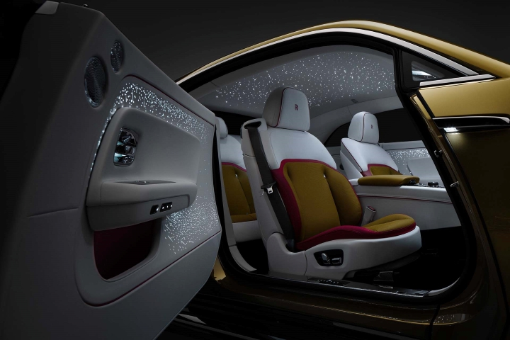

The 2024 Rolls-Royce Spectre is a remarkable electric luxury coupe, marking Rolls-Royce's entry into the EV market.
Here are the key highlights:
Performance: The Spectre boasts 576 horsepower and 664 lb-ft of torque, allowing it to accelerate from 0 to 60 mph in 4.4 seconds.
Its top speed is 155 mph (Edmunds) (Top Gear).
Range and Charging: It offers a range of approximately 329 miles on a full charge.
The vehicle can be charged from 10% to 80% in just 34 minutes with a 195 kW charger (Top Gear).

Interior and Features: The Spectre’s interior is luxurious, featuring high-quality materials such as real wood and metal.
It includes unique elements like a starlight headliner and starlight doors. The seats are highly comfortable with options for ventilation and
massaging (Cars.com).
Technology: The car includes a digital gauge cluster and a bespoke multimedia system called Spirit, which is distinct from BMW's iDrive system.
Traditional Rolls-Royce features such as umbrella holders in the doors and rotary dials for temperature control are also present (Cars.com).
Sustainability: While the Spectre is not marketed as an eco-friendly vehicle, Rolls-Royce emphasizes responsible sourcing of battery materials
and the use of green electricity in production (Top Gear).
Overall, the Spectre is positioned as the ultimate luxury electric vehicle,
combining traditional Rolls-Royce opulence with modern electric performance (Rolls-Royce Motor Cars) (Top Gear).
Dive into the MotorVault
Wise words from the author:
"Cars are not just transportation; they're an expression of freedom and a gateway to adventure,
so why stay locked in the vault when you can break free and feel the thrill."